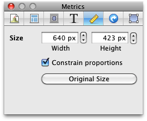

Metrics Inspector

The Metrics tab of the Inspector is used to adjust width and height of objects.
If the "Constrain proportions" box is checked, adjusting height will change width to match, and visa versa. This applies when resizing the object in the Web View too.
You can make an object return to its original size by clicking the "Original Size" button.